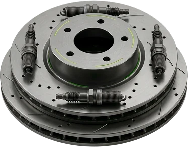
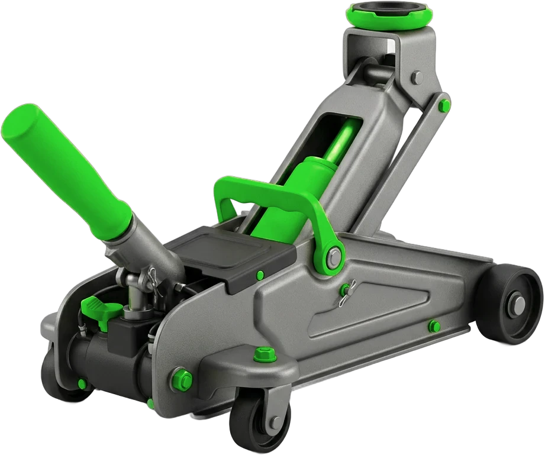
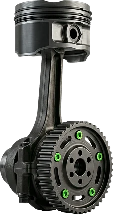
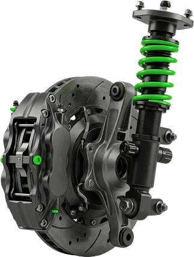
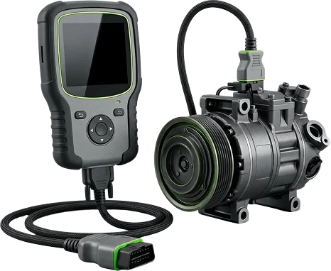
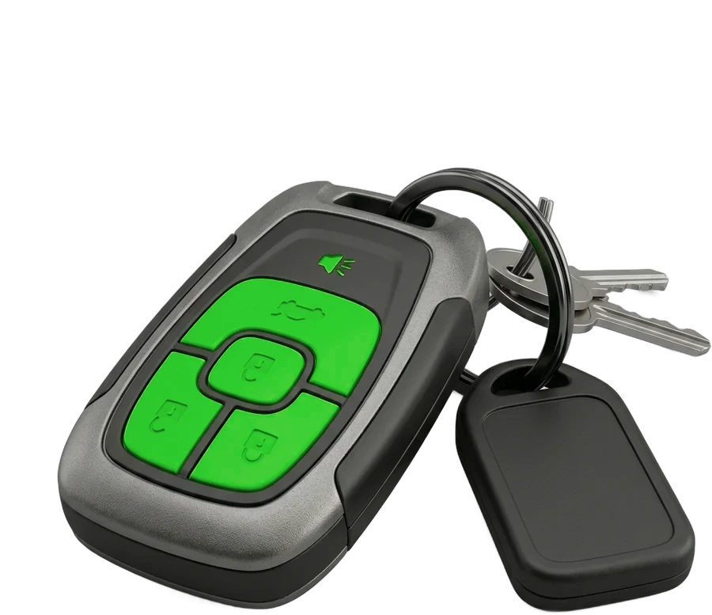

Шины и колёса
ШиномонтажБалансировкаВулканизацияПрокатка дисковРазвал-схождение
Узнать цену
Минск, Центральный район
Шиномонтаж, балансировка, развал-схождение, обслуживание и ремонт. Отечественные и импортные авто, коммерческий транспорт.

Цена за 1 шт.
Пн–Пт 9:00–20:00, Сб–Вс 9:00–17:00
Ремонтируем не только легковые




Приехал на сход-развал по совету из Tesla-клуба — исправлять работу другого сервиса. Мастер выставил всё по сервисному режиму, руль и рейка теперь показывают ноль, хотя машина лифтована. Теперь на развал только сюда.
Делал развал не раз. Чисто, аккуратно, удобный заезд. Все мастера компетентные и вежливые, делают быстро и чётко, цены очень хорошие.
Несколько лет переобуваю здесь свои машины. Ни разу не было проблем с балансировкой или дисками. Цены адекватные, подскажут по резине и давлению.
Заехал поменять масло без записи. Немного подождал — мастера были заняты, — потом машину взяли в работу. Заменили масло и дали советы по следующей замене.
Делал шиномонтаж и сход-развал. Быстро, качественно, профессионально. Отдельное спасибо за динамометрический ключ.
Развал-схождение: отличные мастера на обеих сменах. Знают и понимают, что делают.
Условия назовём по телефону
Позвоните и выберите удобное время
Отечественные и импортные авто
Скажите, что нужно сделать
Пн–Пт до 20:00, Сб–Вс до 17:00
Центральный район Минска — точка на карте ниже
